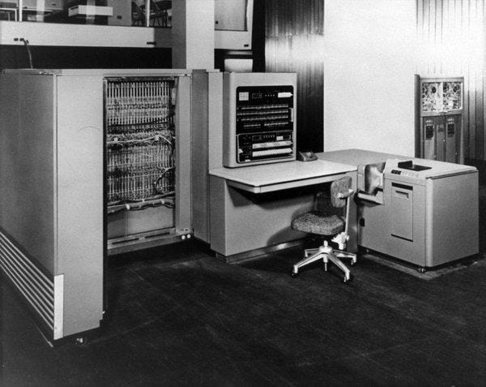
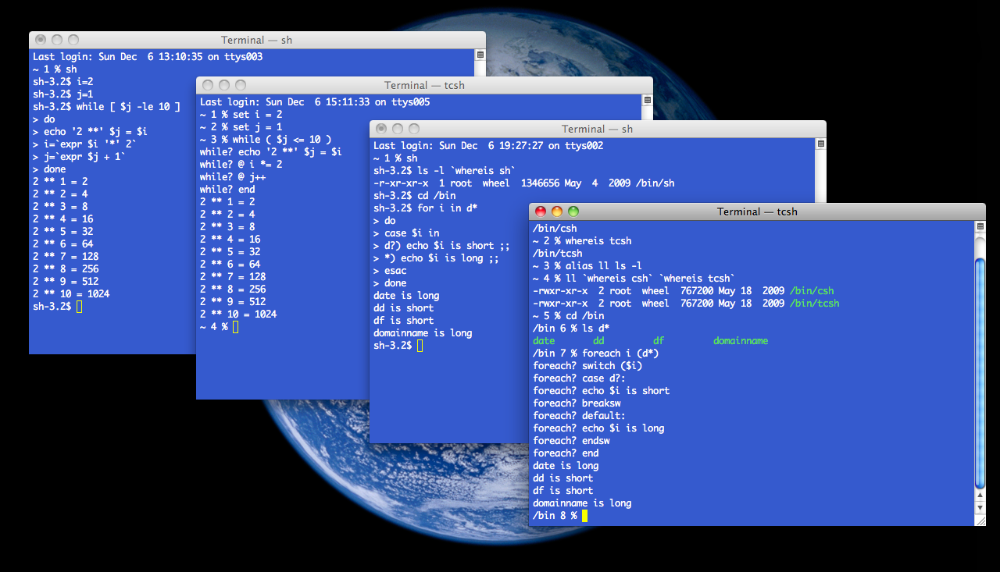
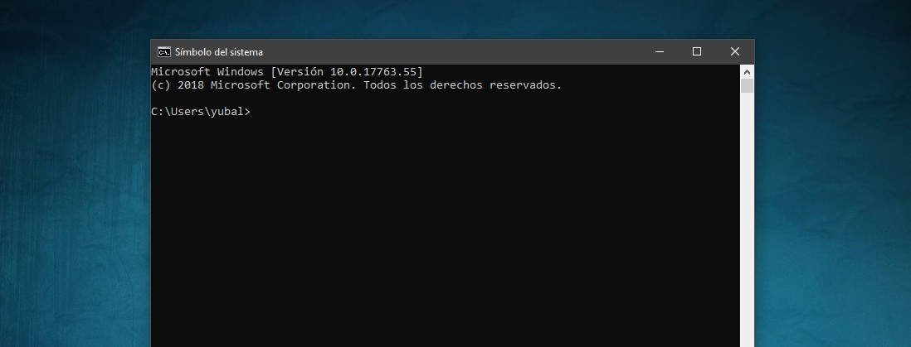

¿Qué es un Sistema Operativo?
Un sistema operativo es el software principal que permite la comunicación entre el usuario y el hardware del computador. Administra el procesador, la memoria RAM, el disco duro y otros dispositivos.
Sin un sistema operativo, el equipo no podría ejecutar programas ni organizar sus recursos correctamente.

Secciones del Sitio
Historia
Explica el origen de los sistemas operativos y cómo comenzaron a desarrollarse los primeros mecanismos de control del hardware.

Evolución
Describe cómo los sistemas operativos han mejorado con el tiempo, incorporando interfaces gráficas, multitarea y mayor seguridad.

Comandos
Presenta los comandos de CMD y PowerShell utilizados para analizar el procesador, memoria, disco, procesos y estado del sistema.
